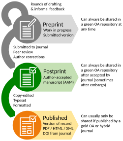

Chapter 5: Open-Access Publishing and Preprints
Authors: Sara Said, Diana Bocancea, Eva Koderman; Reviewers: Niels Reijner, Eva van Heese, Laura Jonkman
This chapter:
- defines open access and its various degrees;
- explains the value of publishing null and replication findings;
- introduces preprints and lists commonly used platforms across disciplines;
- offers guidance on article processing charges (APCs);
- provides tips for selecting a journal and avoiding predatory ones.
1. What is Open Access?
Publishing an article in an open access form means making it freely available with various degrees of accessibility and funding:
| Type | What it means | Who pays |
|---|---|---|
| 🟡 Gold open access | Freely and permanently available, immediately upon publication | Author/institution via article processing charge (APC)* |
| 💎 Diamond open access | Freely and permanently available, immediately upon publication | No fees for authors or readers, funded by institutions or societies |
| 🟢 Green open access | In a repository, freely available, but sometimes after embargo | No fee |
| 🌓 Hybrid open access | Specific publication freely available, rest of journal paywalled | Author via APC* |
| 🥉 Bronze open access | Free to read, but without open license (access may be temporary or limited) | Varies |
| ⚫ Black open access | Unauthorized sharing via pirate sites or shadow libraries | No fees but illegal |
In addition to these main types, there are more complex or combined models of open access. These include delayed open access, where articles become freely available after an embargo period; hybrid plus open access, which combines hybrid publishing with repository deposits; bronze open access with explicit licenses; and innovative approaches like Subscribe to Open, which uses subscription revenue to fund open access for entire journals.
*APCs can vary a lot, depending on the journal, ranging from a few hundred dollars for lower-impact journals to around $5,000–$10,000 for high-impact journals. Importantly, these costs are not paid by individual authors out of pocket, but are typically covered by the research group’s budget or grant funding. Since grant budgets vary greatly between research groups, these high APCs can limit publishing opportunities for groups with less funding.
2. Why should we publish open access?
Open access publishing makes research freely available to all. This makes it easier for other scientists, students, and the general public to read and use your work. It increases visibility and accelerates discovery by removing access barriers. Open access also matters to the scientific community as a whole because it makes science more transparent, inclusive and fair. It also encourages collaboration across disciplines, particularly valuable in neuroscience’s cross-disciplinary landscape. Additionally, by making research accessible to the general public, it allows for clearer dissemination of information and promotes trust in science. In short, we publish not just for ourselves, but for the wider world. Open access publishing supports open knowledge exchange, making it easier for others to learn from and extend your work.
3. What should we publish?
There are many valuable research contributions worth publishing, including peer-reviewed journal articles, conference abstracts, preregistrations (see Chapter 2), data and analysis scripts (see Chapter 3). While journal articles are often seen as the “gold standard,” each format plays a role in sharing knowledge and all benefit from being openly available. This section will focus on two areas that are often overlooked or discouraged: negative or inconclusive findings, and preprints.
3.1) Publishing when results aren’t what you expected - null and replication findings
Of course, it's ideal when your data support your hypothesis and yield statistically significant results that advance the field. However, science doesn't always work this way. Negative or null results are a natural part of the research process, they provide valuable information that helps prevent duplication of effort. They guide researchers away from the dead ends, enabling them to build on what’s already been tried. Without this transparency, we fall into what's known as the “file drawer effect”: studies with non-significant results get tucked away and forgotten, leading to a skewed view of what’s actually known. Unfortunately, this is what often happens in science. Replication studies, too, are often undervalued but crucial. They test the reliability of findings and strengthen the foundation of scientific knowledge. In fields like neuroscience, where complex methods and small sample sizes are common, replication is key to building trust in the results we report.
We know that high-impact journals don’t always prioritize these kinds of studies. This is partly due to publication bias and the preference for novel, “breakthrough” findings, as well as the perception that null or replication studies are less innovative and attract fewer citations. In some cases, they may even be seen as challenging influential prior work, which can make them harder to get through peer review. But there are still good options to share your research:
- Upload your work as a preprint to make it immediately accessible (see section below)
- Submit to journals that welcome null results and replication studies, such as eLife
- Submit the lesson you learned in a non-traditional paper (for example a code or software paper, narrative case report, multimedia article) to journals or platforms that also welcome non-traditional publications, such as eLife, Aperture Neuro, and F1000Research
- Combine several null results or replications into a comprehensive paper that stands on its own
- Add null results or replications into the supplement of a paper with related analyses
3.2) Preprints
What are preprints?
A preprint is an early version of a research paper shared publicly before formal peer review. Posting a preprint allows researchers to communicate findings rapidly, enabling early access, feedback, and potential collaboration from the scientific community.
Benefits and limitations
Traditional journal publication can take many months, or even over a year (due to editorial screening, peer review, and post-acceptance steps like copyediting and typesetting), delaying the dissemination of new findings. Peer review remains essential for quality control of research, but it can take time. Sharing a preprint before peer review helps others access and build on your work more quickly, especially critical in time-sensitive areas like neuroscience. Because they haven’t yet been peer-reviewed, preprints should be interpreted with appropriate caution, as there is a risk of misinformation or misinterpretation.
Where to submit preprints? How?
Preprints can be shared either on dedicated preprint platforms, such as bioRxiv, medRxiv, or arXiv, or in some cases, directly on a journal’s own preprint server if they offer one. It is important to check the journal guidelines for preprints, as these might differ. If the guidelines are not available, make sure to reach out to the journal’s contact person and ask about their preprint policy.
What happens when the peer-reviewed manuscript is accepted at a journal?
The ideal time to post a preprint is before journal submission. Once the peer-reviewed version is accepted and published, the preprint typically remains online but may be linked to or replaced with the final, formatted version, depending on the preprint server’s and journal’s policies.

Figure 5.1 - The process of article submission, starting with a preprint (image source).
Different fields use different preprint servers; a list of commonly used platforms is provided below.
- Open Science Framework (OSF Preprints) - general preprint repository with multiple disciplines
- Preprint - general preprint repository for multiple disciplines
- arXiv - for physics, mathematics, computer science, and related fields
- bioRxiv - for biological sciences
- medRxiv - for health sciences, clinical research, and medical fields
4. Practical Considerations when publishing your research
4.1) Article Processing Charges (APCs)
Once you've decided to share your work, it's important to consider how best to make it openly accessible. In many countries, including the Netherlands, open access is now the default for publicly funded research. Funders often require that research outputs be freely available to ensure transparency and public accountability. Fortunately, open access publishing has become much more accessible. Many universities and national consortia have agreements with publishers that waive or reduce article processing charges (APCs). In the Netherlands, for example, it is common — and often straightforward — to publish open access without paying high fees, thanks to institutional deals with many journals. However, these agreements often cover only the main, higher-impact titles, while companion “Communications” journals (such as Brain Communications or Acta Neuropathologica Communications) are excluded, even though they are frequently chosen by researchers over the flagship journals. Check out this link for the Amsterdam Vrije Universiteit (VU)APC covered journals: VU journal browser.
4.2) Selecting a Journal
That said, it's important to find the right balance. Publishing in a high-impact journal is often a strategic goal, but it should be weighed against the costs and the journal’s open access policy. Many reputable journals now offer open access options or have fully open models. To check whether a journal is open access, you can use DOAJ.
It is important to evaluate journals critically before submitting your work. Some publishers exploit the open access model by charging fees without providing proper peer review or editorial standards. These predatory journals can appear legitimate at first glance, so it’s essential to evaluate a journal’s transparency, peer review process, and reputation. Also pay attention to the license type and copyright terms. Some journals apply restrictive Creative Commons licenses (see Chapter 3) or require copyright transfer, which can limit how you reuse your own work or how openly it can be shared, even if the article is labelled "open access."
The line isn't always clear — there’s a spectrum ranging from obvious fraud to lower-quality outlets that may still look professional. For a curated list of known predatory journals to help guide your evaluation, see the predatory journal list.
As the open access landscape evolves, staying informed and using institutional support (such as your university library or research office) can help you publish ethically and strategically, while keeping your work accessible to the global community.